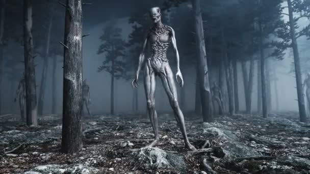

Reports

Bonnybridge
1992: James Walker noticed unidentified lights in the sky over Bonnybridge, the town became the scene of numerous UFO sightings. It forms part of the "Falkirk Triangle", an area stretching from Stirling to Fife and the outskirts of Edinburgh. Ufologists claim that Bonnybridge is the world's number one UFO location, with an average of around 300 sightings a year.
- 13th century
- 20th century
- 21th century